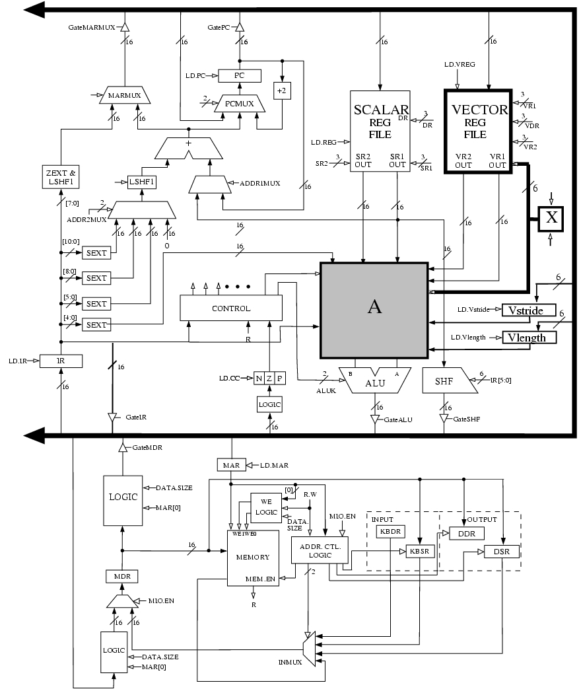
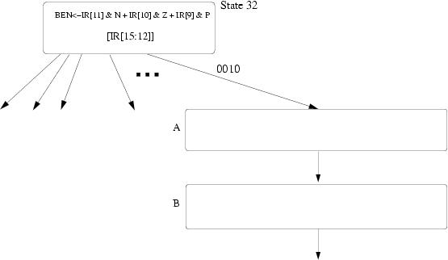

A computer has an 8KB write-through cache. Each cache block is 64 bits, the cache is 4-way set associative and uses a victim/next-victim pair of bits in each block for its replacement policy. Assume a 24-bit address space and byte-addressable memory. How big (in bits) is the tag store?
An LC-3b system ships with a two-way set associative, write back cache with perfect LRU replacement. The tag store requires a total of 4352 bits of storage. What is the block size of the cache? Please show all your work.
Hint: 4352 = 212 + 28.
Based on Hamacher et al., p. 255, question 5.18. You are working with a computer that has a first level cache that we call L1 and a second level cache that we call L2. Use the following information to answer the questions.
- The L1 hit rate is 0.95 for instruction references and 0.90 for data references.
- The L2 hit rate is 0.85 for instruction references and 0.75 for data references.
- 30% of all instructions are loads and stores.
- The size of each cache block is 8 words.
- The time needed to access a cache block in L1 is 1 cycle and the time needed to access a cache block in L2 is 6 cycles.
- The accesses to the caches and memory are done sequentially. If there is a miss in the L1 and a hit in the L2 then the total latency is 7 cycles.
- Memory is accessed only if there is a miss in both caches.
- The width of the memory bus is one word.
- It takes one clock cycle to send an address to main memory.
- It takes 20 cycles to access the main memory.
- It takes one cycle to send one word from the memory to the processor. Thus the total latency to get a word from memory to the processor is 22 cycles.
- The bus allows sending a new address to memory in the same cycle that data is sent from memory to the processor.
- Assume the data is accessible to the processor only AFTER the whole cache block has been brought in from the memory, and buffered on the processor chip. The processor can then access the data independent of and during the cache fill.
- What is the average access time per instruction (assume no interleaving)?
- What is the average access time per instruction if the main memory is 4-way interleaved?
- What is the average access time per instruction if the main memory is 8-way interleaved?
- What is the improvement obtained with interleaving?
Hamacher, pg.255, question 5.13. A byte-addressable computer has a small data cache capable of holding eight 32-bit words. Each cache block consists of one 32-bit word. When a given program is executed, the processor reads data from the following sequence of hex addresses:
200, 204, 208, 20C, 2F4, 2F0, 200, 204, 218, 21C, 24C, 2F4
This pattern is repeated four times.
-
Show the contents of the cache at the end of each pass throughout this loop if a direct-mapped cache is used. Compute the hit rate for this example. Assume that the cache is initially empty.
-
Repeat part (a) for a fully-associative cache that uses the LRU-replacement algorithm.
-
Repeat part (a) for a four-way set-associative cache that uses the LRU replacement algorithm.
In class, we discussed two types of busses: “pending bus” and “split transaction bus”. What is the advantage of a split-transaction bus over a pending bus?
In class, we discussed the asynchronous finite state machine for the device controller of an input-output device within the context of a priority arbitration system. Draw the state diagram for this device controller (as drawn in lecture), identify the input and output signals, and briefly explain the function of each input and output signal.
As mentioned in class, the finite state machine has some race conditions. Identify the race conditions and show what simple modifications can be made to eliminate them.
In class we discussed asynchronous buses with central arbitration. Our job in this problem is to design the state machine for a synchronous bus using distributed arbitration. Recall that with distributed arbitration, each device receives the Bus Request signals from all other devices, and determines whether or not it is the next Bus Master. Assume all bus transactions take exactly one cycle, and that no device may be the Bus Master for two consecutive cycles.
Assume four devices, having priorities 1, 2, 3, and 4 respectively. Their respective controllers request the bus via asserting BR1, BR2, BR3, and BR4 respectively. Priority 4 is the highest priority.
-
Show the interconnections required for distributed arbitration for the four devices and their controllers connected to the bus. Be sure to label each signal line and designate by arrows whether the signals are input or output with respect to the device.
-
Is it possible for starvation to occur in this configuration? Describe the situation where this can occur.
-
Assume each I/O Controller is implemented using a clocked finite state machine. Draw a Moore model state machine for the controller operating at priority level 2. Label each state clearly. Label all necesary inputs and outputs. You do not need to show the clock signal on the state machine diagram. State transitions are synchronized to the clock.
Below, we have given you four different sequences of addresses generated by a program running on a processor with a data cache. Cache hit ratio for each sequence is also shown below. Assuming that the cache is initially empty at the beginning of each sequence, find out the following parameters of the processor's data cache:
- Associativity (1, 2, or 4 ways)
- Block size (1, 2, 4, 8, 16, or 32 bytes)
- Total cache size (256B, or 512B)
- Replacement policy (LRU or FIFO)
Assumptions: all memory accesses are one byte accesses. All addresses are byte addresses.
| Number | Address Sequence | Hit Ratio |
|---|---|---|
| 1 | 0, 2, 4, 8, 16, 32 | 0.33 |
| 2 | 0, 512, 1024, 1536, 2048, 1536, 1024, 512, 0 | 0.33 |
| 3 | 0, 64, 128, 256, 512, 256, 128, 64, 0 | 0.33 |
| 4 | 0, 512, 1024, 0, 1536, 0, 2048, 512 | 0.25 |
Explain the differences between exceptions and interrupts. Be concise in your explanations.
Explain the similarities of exceptions and interrupts. Clearly describe the steps required to handle an exception or an interrupt.
Determine the decimal value of the following IEEE floating point numbers.
1 10000000 101000000000000000000000 00000000 010100000000000000000001 11111111 00000000000000000000000
Consider the following piece of code:
for(i = 0; i < 100; i++)
A[i] = ((B[i] * C[i]) + D[i]) / 2;Translate this code into assembly language using the following instructions in the ISA (note the number of cycles each instruction takes is shown with each instruction):
Opcode Operands Number of Cycles Description LEARi, X1 Ri ← address of X LDRi, Rj, Rk11 Ri ← MEM[Rj + Rk] STRi, Rj, Rk11 MEM[Rj + Rk] ← Ri MOVIRi, Imm1 Ri ← Imm MULRi, Rj, Rk6 Ri ← Rj × Rk ADDRi, Rj, Rk4 Ri ← Rj + Rk ADDRi, Rj, Imm4 Ri ← Rj + Imm RSHFARi, Rj, amount1 Ri ← RSHFA (Rj, amount) BRccX1 Branch to X based on condition codes Assume it takes one memory location to store each element of the array. Also assume that there are 8 registers (R0-R7).
How many cycles does it take to execute the program?
-
Now write Cray-like vector/assembly code to perform this operation in the shortest time possible. Assume that there are 8 vector registers and the length of each vector register is 64. Use the following instructions in the vector ISA:
Opcode Operands Number of Cycles Description LDVst, #n1 Vst ← n LDVln, #n1 Vln ← n VLDVi, X11, pipelined VSTVi, X11, pipelined VmulVi, Vj, Vk6, pipelined VaddVi, Vj, Vk4, pipelined VrshfaVi, Vj, amount1 VbrccX1 How many cycles does it take to execute the program on the following processors? Assume that memory is 16-way interleaved.
- Vector processor without chaining, 1 port to memory (1 load or store per cycle)
- Vector processor with chaining, 1 port to memory
- Vector processor with chaining, 2 read ports and 1 write port to memory
Little Computer Inc. is now planning to build a new computer that is more suited for scientific applications. LC-3b can be modified for such applications by replacing the data type Byte with Vector. The new computer will be called LmmVC-3 (Little 'mickey mouse' Vector Computer 3). Your job is to help us implement the datapath for LmmVC-3. LmmVC-3 ISA will support all the scalar operations that LC-3b currently supports except the LDB and STB will be replaced with VLD and VST respectively. Our datapath will need to support the following new instructions:

Note: VDR means “Vector Destination Register” and VSR means “Vector Source Register.”
- MOVI
- If IR[11:9] = 000, MOVI moves the unsigned quantity amount6 to Vector Stride Register (Vstride). If IR[11:9] = 001, MOVI moves the unsigned quantity amount6 to Vector Length Register (Vlength). This instruction has already been implemented for you.
- VLD
- VLD loads a vector of length Vlength from memory into VDR. VLD uses the opcode previously used by LDB. The starting address of the vector is computed by adding the LSHF1(SEXT(offset6)) to BaseR. Subsequent addresses are obtained by adding LSHF1(ZEXT(Vstride)) to the address of the preceding vector element.
- VST
- VST writes the contents of VSR into memory. VST uses the opcode previously used by STB. Address calculation is done in the same way as for VLD.
- VADD
- If IR[4] is a 1, VADD adds two vector registers (VSR1 and VSR2) and stores the result in VDR. If IR[4] is a 0, VADD adds a scalar register (SR2) to every element of VSR and stores the result in VDR.
VLD, VST, and VADD do not modify the content of Vstride and Vlength registers.
The following five hardware structures have been added to LC-3b in order to implement LmmVC-3.
- Vector Register File with eight 63-element Vector registers
- Vector Length Register
- Vector Stride Register
- A third input to DRMUX containing IR[8:6]
- Grey box A
- Box labeled X
These structures are shown in the LmmVC-3 datapath diagram:
A 6-bit input to the Vector Register file has been labeled X on the datapath diagram. What is the purpose of this input? (Answer in less than 10 words )
The logic structure X contains a 6-bit register and some additional logic. X has two control signals as its inputs. What are these signals used for?
Grey box A contains several additional muxes on both input lines to the ALU. Complete the logic diagram of grey box A (shown below) by showing all muxes and interconnects. You will need to add new signals to the control store; be sure to clearly label them in the logic diagram.
- Keep in mind that we will still need to support all the existing scalar operations.
- The XOR operation in the ALU can be used to compare two values.
- Our solution required 3 additional control signals and 6 2-to-1 muxes.
-
We show the beginning of the state diagram necessary to implement VLD. Using the notation of the LC-3b State Diagram, add the states you need to implement VLD. Inside each state describe what happens in that state. You can assume that you are allowed to make any changes to the microsequencer that you find necessary. You do not have to make/show these changes. You can modify BaseR and the condition codes. Make sure your design works when Vlength equals 0. Full credit will be awarded to solutions that require no more than 7 states.
